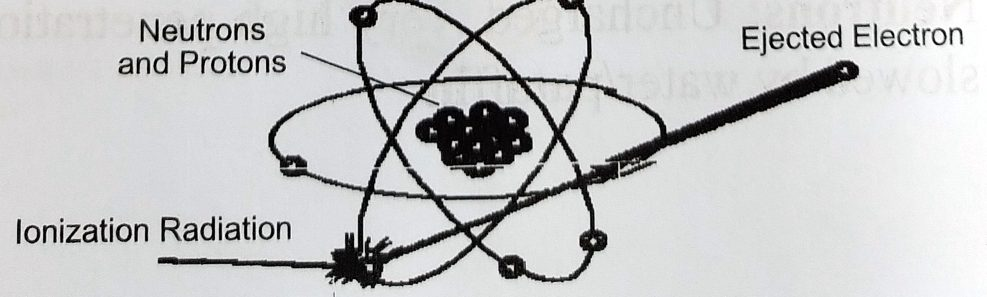
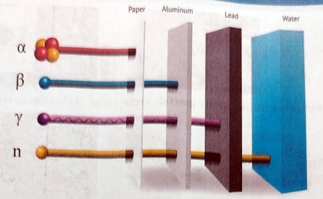
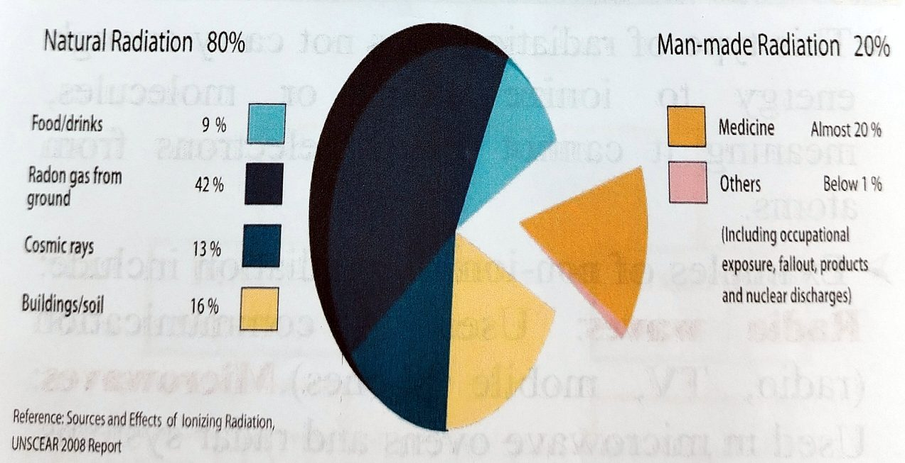
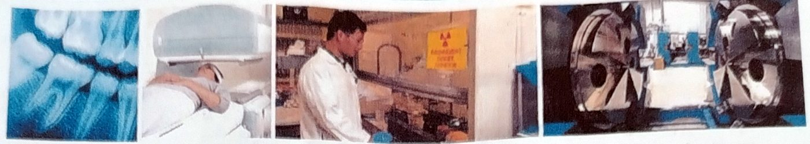
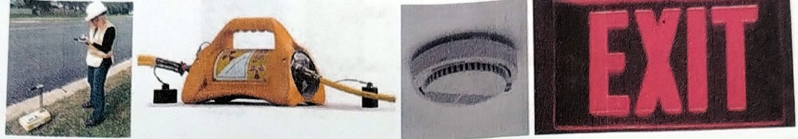
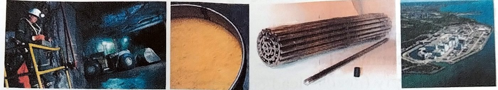
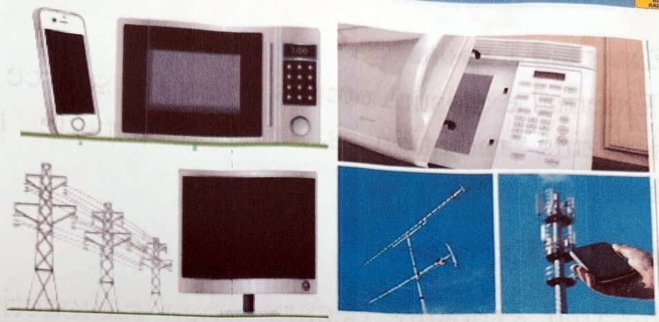
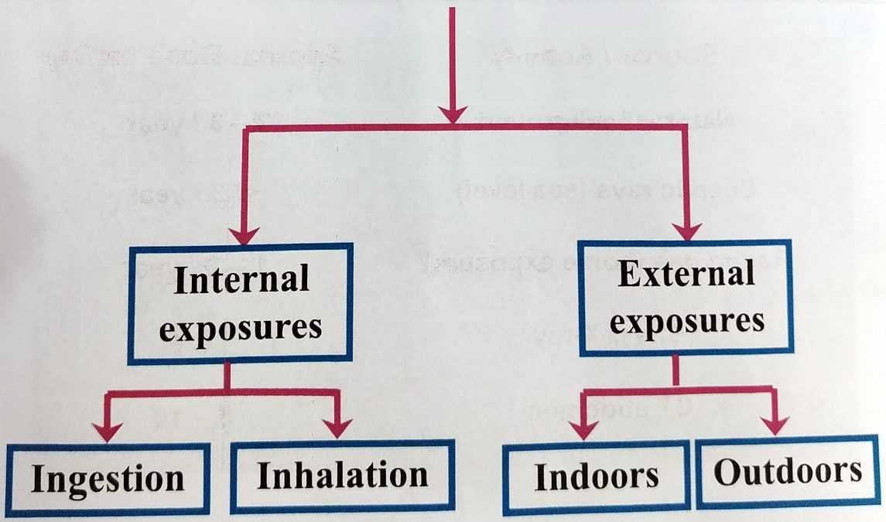

تصنيف الإشعاع المؤين ومصادرهClassification of Ionizing Radiation, Sources of Ionizing Radiation & Comparison of Radiation Doses
نظري · م01 · 2.1 دقيقةأقسام المحاضرة (9)
- موضوعات المحاضرةLecture Topics
- الإشعاعRadiation
- تصنيف الإشعاع المؤيِّنClassification of Ionizing Radiation
- قدرة الاختراق للإشعاع المؤيِّنPenetrating Power of Ionizing Radiation
- مصادر الإشعاع المؤيِّنSources of Ionizing Radiation
- المصادر الصناعية للإشعاعArtificial Sources of Radiation
- الإشعاع غير المؤيِّن ومصادرهNon-ionizing Radiation & Its Sources
- التعرّض للإشعاعRadiation Exposures
- مقارنة الجرعات الإشعاعيةComparison of Radiation Doses
موضوعات المحاضرةLecture Topics
- 1. Classification of Ionizing Radiationتصنيف الإشعاع المؤيِّن.
- 2. Sources of Ionizing Radiationمصادر الإشعاع المؤيِّن.
- 3. Comparison of Radiation Dosesمقارنة الجرعات الإشعاعية.
الإشعاعRadiation
Radiation is classified into two main types: ionizing and non-ionizing.
يُصنَّف الإشعاع إلى نوعين رئيسين: مؤيِّن وغير مؤيِّن.

تصنيف الإشعاع المؤيِّنClassification of Ionizing Radiation
Ionizing Radiation can be classified into two main groups:
يمكن تصنيف الإشعاع المؤيِّن إلى مجموعتين رئيستين:
أمثلةExamples
أمثلةExamples
قدرة الاختراق للإشعاع المؤيِّنPenetrating Power of Ionizing Radiation

This diagram illustrates the penetrating power of ionizing radiation:
يوضّح هذا المخطط قدرة الاختراق للإشعاع المؤيِّن:
- • Alpha (α) stopped by paper.جسيمات ألفا (α) تُوقفها الورقة.
- • Beta (β) stopped by aluminum.جسيمات بيتا (β) يُوقفها الألمنيوم.
- • Gamma (γ) penetrates deeply (needs lead/concrete).أشعة غاما (γ) تخترق بعمق (تحتاج إلى الرصاص أو الخرسانة لإيقافها).
- • Neutrons (n): very high penetration, slowed by water/paraffin.النيوترونات (n) اختراقها عالٍ جداً، ويُبطئها الماء أو البارافين.
مصادر الإشعاع المؤيِّنSources of Ionizing Radiation

الإشعاع الطبيعي 80%Natural Radiation 80%
الإشعاع الصناعي (من صنع الإنسان) 20%Man-made Radiation 20%
المصادر الصناعية للإشعاعArtificial Sources of Radiation



الإشعاع غير المؤيِّن ومصادرهNon-ionizing Radiation & Its Sources
This type of radiation does not carry enough energy to ionize atoms or molecules, meaning it cannot remove electrons from atoms.
هذا النوع من الإشعاع لا يحمل طاقة كافية لتأيين الذرات أو الجزيئات، أي إنه لا يستطيع انتزاع الإلكترونات من الذرات.
Examples of non-ionizing radiation include:
من أمثلة الإشعاع غير المؤيِّن:
مصادر الإشعاع غير المؤيِّنSources of non-ionizing radiation

التعرّض للإشعاعRadiation Exposures

مقارنة الجرعات الإشعاعيةComparison of Radiation Doses
Source / Activity — Approx. Dose (mSv)
المصدر أو النشاط، والجرعة التقريبية بوحدة mSv (ملّي سيفرت، أي جزء من ألف من السيفرت):
المحاضرة مسموعة
نص الأستاذ بالإنكليزي مثل الأصل · 2.1 دقيقة. اضغط أي جملة تسمعها، أو مصطلح منقّط تسمع لفظه ومعناه.
Lecture Topicsموضوعات المحاضرة
Lecture Topics
Classification of Ionizing Radiation
Sources of Ionizing Radiation
Comparison of Radiation Doses
Radiationالإشعاع
Radiation
Energy in the form of particles or electromagnetic waves.
Radiation is classified into two main types: ionizing and non-ionizing.
Radiation with sufficient energy to remove an electron from an atom or molecule.
Classification of Ionizing Radiationتصنيف الإشعاع المؤيِّن
Classification of Ionizing Radiation
Ionizing Radiation can be classified into two main groups:
These radiations consist of charged particles. They can directly interact with matter and produce ionization.
Examples
These radiations are uncharged and produce ionization mainly by generating secondary charged particles.
Examples
Penetrating Power of Ionizing Radiationالقدرة الاختراقية للإشعاع المؤيِّن
Penetrating Power of Ionizing Radiation
This diagram illustrates the penetrating power of ionizing radiation:
Alpha (α) stopped by paper.
Beta (β) stopped by aluminum.
Gamma (γ) penetrates deeply (needs lead/concrete).
Neutrons (n): very high penetration, slowed by water/paraffin.
Sources of Ionizing Radiationمصادر الإشعاع المؤيِّن
Sources of Ionizing Radiation
Natural Radiation 80%
Man-made Radiation 20%
Artificial Sources of Radiationالمصادر الصناعية للإشعاع
Artificial Sources of Radiation
Non-ionizing Radiation & Its Sourcesالإشعاع غير المؤيِّن ومصادره
Non-ionizing Radiation & Its Sources
This type of radiation does not carry enough energy to ionize atoms or molecules, meaning it cannot remove electrons from atoms.
Examples of non-ionizing radiation include:
Sources of non-ionizing radiation
Radiation Exposuresالتعرض للإشعاع
Radiation Exposures
External exposure occurs when the source of ionizing radiation is located outside the body.
Internal exposure occurs when radioactive material enters the body.
Comparison of Radiation Dosesمقارنة الجرعات الإشعاعية
Comparison of Radiation Doses
Source / Activity — Approx. Dose (mSv)
20 سؤال من نص المحاضرة، ويّا «ليش صح» بعد كل جواب.
ابدأ الاختباراضغط أي مصطلح منقّط تسمع لفظه ومعناه.
PDF ثنائي اللغة: نص الأستاذ + الترجمة + الخلاصة + الأسئلة · 1.1 MB
تحميل الملف